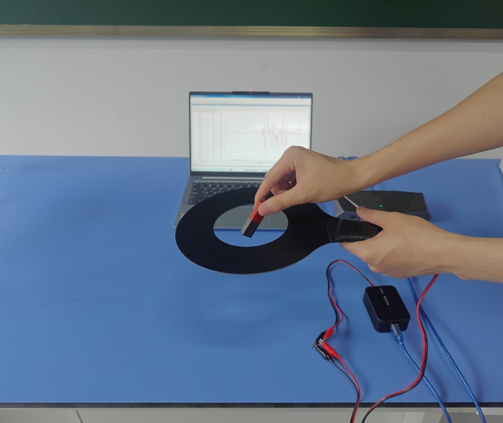
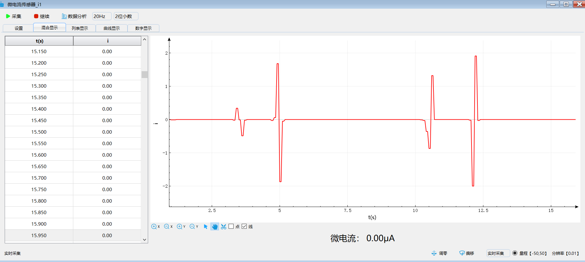

实验三十 地磁发电研究
【实验目的】
认识到地球周围空间分布着地磁场，并且验证闭合导线切割地球磁场是否会产生微弱电流。
【实验原理】
穿过闭合回路的磁通量发生变化时，回路中将产生感应电动势，感应电动势的大小与磁通量的变化率成正比，这就是电磁感应定律。本实验我们利用条形磁铁竖直下落来改变穿过线圈的磁通量，利用电压传感器测量线圈两端产生的感应电动势。采用变量控制法进行实验，比较各种情况下磁铁下落时线圈产生的感应电动势的大小，便可验证电磁感应定律。
【实验器材】
数据采集器、微电流传感器、灵敏线圈和计算机等。
【实验装置】

【实验操作步骤】
1.如实验装置图所示架设好实验仪器，将微电压传感器测量夹夹在灵敏线圈的测量夹。将微电压传感器接入数据采集器；
2.进入实验数据分析软件，将微电压传感器的显示方式设置为“曲线”，采集频率设置为“50Hz”；
3.将标尺竖立在方形线圈旁边，然后将条形磁铁从灵敏线圈上方某个高度释放，使其竖直下落并穿过方形线圈，观察微电压传感器读数的变化；
4.将条形磁铁从另一个更高的高度释放使其竖直穿过灵敏线圈，观察微电压传感器窗口的变化；
5.点击传感器窗口的“数据分析”按钮，将微电压传感器采集的数据导入分析器进行分析。通过分析可发现：两次实验穿过线圈的磁通量的变化量相等（均为一根磁铁），但变化时间不同，第二次实验所用的时间更短，对应的感应电动势的峰值更大。这说明在磁通量变化量相等的情况下，变化的时间越短，产生的感应电动势越大；
6.另取两根相同的条形磁铁并将它们粘合在一起，然后将一根条形磁铁和粘合在一起的两根条形磁铁分别从
同一高度释放，如步骤5一样对微电压传感器采集的数据进行分析，可发现两次实验磁铁穿过线圈的时间基本相同，即磁通量变化的时间相同，但磁通量的变化量大小不同。磁通量变化量大的（两根磁铁）对应的感应电动势峰值大，这表明在磁通量变化时间相等的情况下，磁通量变化量越大，感应电动势越大；
7.通过前面的分析可知，感应电动势的大小除了与磁通量变化的时间有关，还与磁通量变化的大小有关，即感应电动势的大小与磁通量的变化率成正比。这便验证了电磁感应定律。

条形磁铁穿过闭合线圈产生的感应电流
【思考与讨论】
1.对于本实验采用的方法，你是不是感到很熟悉？它叫什么方法？还记得我们在哪些实验中使用过这种方法吗？使用这种方法进行实验是怎样设计实验方案的？
2.上面的步骤中实际上是通过比较磁通量变化量相同、变化时间不同和磁通量变化量不同、变化时间相同的几种情况下感应电动势的大小来验证电磁感应定律。但具体怎么比较文档中并没有告诉我们，那么，你知道该怎样比较吗？